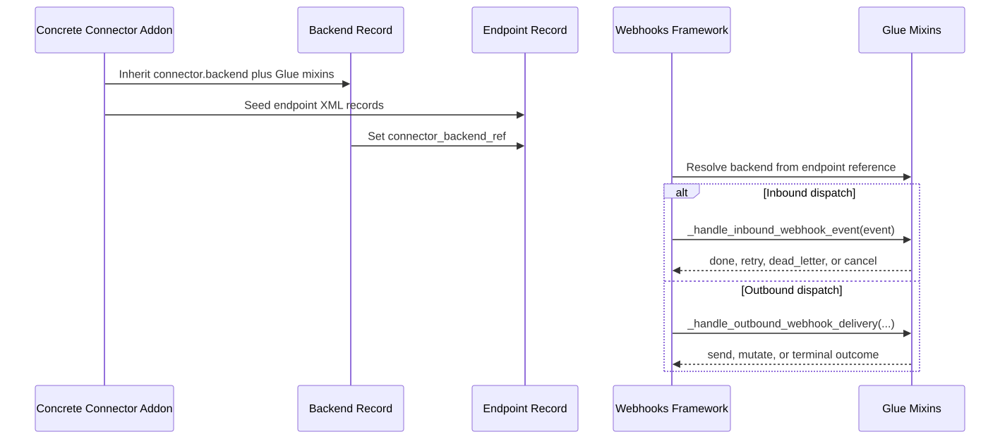

Give connector backends a cleaner foundation for owning webhook flows.
Shared glue infrastructure for connector backends that need webhook ownership, cleaner rollout patterns, and a stronger operational base.
Outcomes
Audience
Capabilities
How it works
Glue Core establishes the shared ownership model first, then the directional glue addons layer inbound and outbound behavior on top so connector teams can grow without rebuilding the same foundation for each flow.

Connector backend linking flow
Technical proof
The technical section below surfaces backend linking flow and orchestration details so evaluators can inspect how backend records, endpoint references, and directional glue pieces fit together.

Connector backend orchestration sequence
Rollout
Start with Glue Core when the backend record should be the place where webhook ownership and rollout decisions live.
bwt_connector_webhooks_core to give backend records a shared ownership layer.
Looking for a faster path from glue layer to live integration? Pair this foundation with premium connector modules such as Stripe when you want a more turnkey rollout.
This guide explains the connector layer of the webhook framework and how an operator links connector backends to their webhook endpoints through the UI.
The connector layer bridges the webhook framework with OCA connector backends (e.g. a Stripe or payment gateway backend). Each connector backend record in Odoo can own one or more webhook endpoints. The connector layer provides:
bwt_connector_webhooks_inbound is installed).bwt_connector_webhooks_outbound is installed).Endpoints are seeded as Odoo XML data records by the concrete connector addon (e.g. bwt_stripe_core). They are not auto-created when a backend record is first created.
For side-addon specific behavior and setup details, see:
If an endpoint has not been automatically linked by the installer, link it manually:
The smart button on the backend form will now resolve to this endpoint.
Each connector backend instance gets its own endpoint records scoped by a technical prefix derived from the backend model name and record ID (e.g. stripe-1-inbound). This ensures codes are unique across companies and backend instances.
Do not manually change the Code field on an endpoint that is linked to a backend; the scoping convention is enforced by the provisioning hooks in the concrete connector addon and resync operations depend on it.
Open the backend form. The Inbound Endpoint and/or Outbound Endpoint smart buttons should show the linked endpoint name and navigate directly to the endpoint configuration on click.
If a smart button shows 0 or is absent, the corresponding side addon (bwt_connector_webhooks_inbound or bwt_connector_webhooks_outbound) may not be installed, or no endpoint with a matching connector_backend_ref value exists yet.
data/ folder for duplicate connector_backend_ref values.data/ folder for the endpoint record and ensure the code follows the <prefix>-<suffix> convention and is unique.connector.backend and the appropriate webhook mixin, and that the addon is installed.This guide covers building a new connector backend addon that integrates with the webhook framework via the connector layer mixins.
The connector layer consists of three abstract models:
bwt.connector.webhook.backend.base - private shared base; not inherited directly. Provides code normalization, scoping primitives, and the integration contract marker.bwt.connector.webhook.inbound.mixin - opt-in mixin for backends that receive inbound webhooks.bwt.connector.webhook.outbound.mixin - opt-in mixin for backends that send outbound webhooks.Concrete backends combine these with the OCA connector.backend model.
For side-specific contracts and examples, also review:
Declare the backend model in your concrete connector addon
class MyServiceBackend(models.Model):
_name = "my_service.backend"
_inherit = [
"connector.backend",
"bwt.connector.webhook.inbound.mixin",
"bwt.connector.webhook.outbound.mixin",
]
_description = "My Service Backend"
name = fields.Char(required=True)
code = fields.Char(required=True)
company_id = fields.Many2one("res.company", required=True)
active = fields.Boolean(default=True)
api_key = fields.Char(string="API Key")
The _is_connector_webhook_backend = True marker is set automatically by the base; your model is enrolled in the backend reference selection without further configuration.
Override _get_technical_prefix() to return a stable, human-readable prefix
def _get_technical_prefix(self):
self.ensure_one()
return f"my-service-{self.id}"
The default prefix is <model-token>-<id>. A custom prefix keeps codes stable across model renames and readable in the admin UI.
Override _handle_inbound_webhook_event to process events routed to this backend
def _handle_inbound_webhook_event(self, event):
self.ensure_one()
payload = event.get_payload()
event_type = payload.get("type", "")
if event_type == "payment.completed":
self._handle_payment(payload)
return event.webhook_done()
return event.webhook_dead_letter()
Valid return values from bwt_connector_webhooks_core.services.result_types:
event.webhook_done() - processing complete.event.webhook_dead_letter() - permanent failure; requires manual review.event.webhook_retry(seconds=60) - re-enqueue after a delay.event.webhook_cancel() - silently cancel without marking as error.Returning None produces a framework-level dead-letter.
The handler record for this backend's inbound endpoint must use Python Callback mode pointing to my_service.backend and _handle_inbound_webhook_event. Seed it as an XML data record in your addon.
For operational linking and troubleshooting steps, see the Glue Inbound README .
Override the following hooks on your backend model.
Dynamic hostname (required when the URL changes between modes)
def _get_outbound_api_base_url(self, delivery=None):
self.ensure_one()
return "https://api.my-service.com"
Authentication headers (required for most APIs)
def _get_outbound_extra_headers(self, delivery):
self.ensure_one()
return {"Authorization": f"Bearer {self.api_key}"}
Pre-send gate (optional - short-circuit before dispatch)
def _check_outbound_dispatch_allowed(self, delivery):
self.ensure_one()
if not self.active:
return delivery.webhook_cancel()
return None
Main dispatch handler (required when using Python Callback mode)
def _handle_outbound_webhook_delivery(self, delivery):
self.ensure_one()
return delivery._build_outbound_delivery_result(outcome="send")
Endpoint records are seeded as XML data in your concrete connector addon's data/ folder. They are linked to backends via the connector_backend_ref field. Do not auto-provision endpoints from Python code; keep them as declarative XML records to stay upgrade-safe.
Example inbound endpoint record
<record id="my_service_inbound_endpoint" model="bwt.webhook.inbound.endpoint">
<field name="name">My Service Inbound</field>
<field name="path">/webhooks/my-service</field>
<field name="handler_id" ref="my_service_inbound_handler"/>
<field name="signature_mode">hmac</field>
<field name="signature_digest">sha256</field>
<field name="signature_encoding">hex</field>
</record>
After install, link the endpoint to the backend by setting connector_backend_ref or by following the UI steps in the Operator Guide.
When queueing an outbound delivery from your business logic
backend = self.env["my_service.backend"].browse(backend_id)
endpoint = backend.get_outbound_endpoint()
delivery = endpoint.queue_delivery(
payload={"event": "order.paid", "order_id": order.id},
context_lines={"idempotency_key": str(uuid.uuid4())},
)
Use code_suffix when a backend has multiple outbound endpoints
endpoint = backend.get_outbound_endpoint(code_suffix="orders")
The code_suffix value must match the code_suffix column on the endpoint record, which is set by the concrete addon's XML data.
For outbound routing patterns and troubleshooting, see the Glue Outbound README .